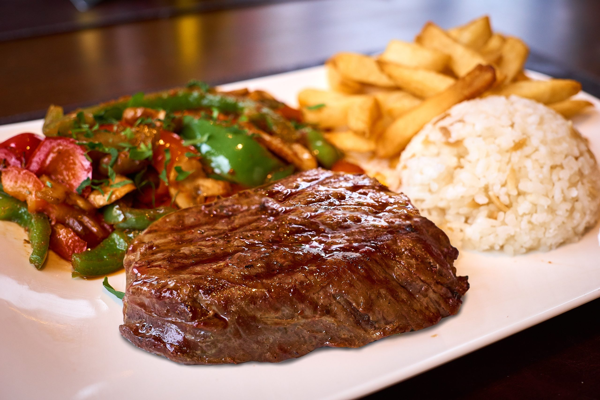
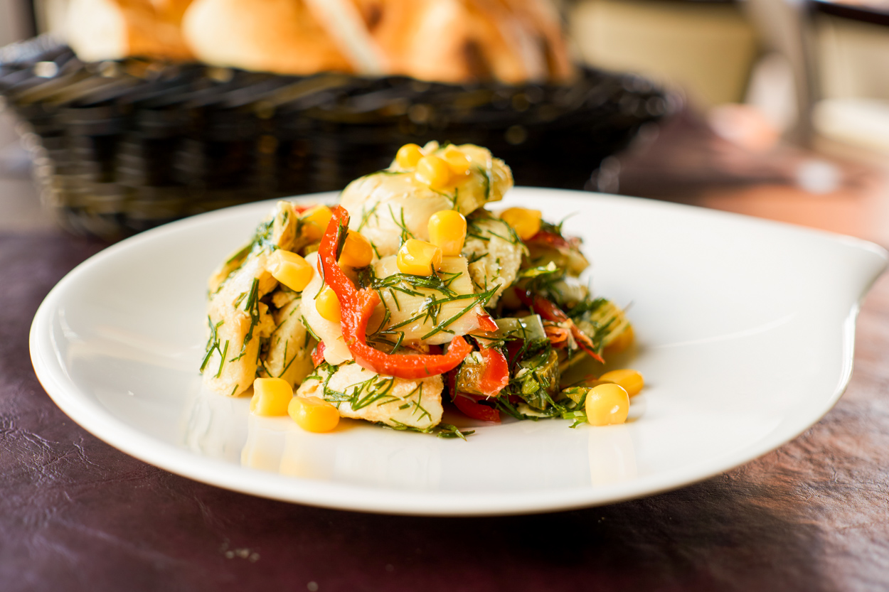
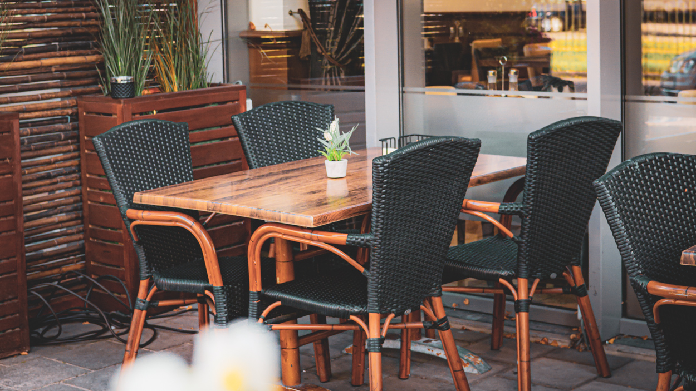

Turks restaurant in Amsterdam Osdorp, sinds 2004
De Turkse smaak, vers van de houtskoolgrill
Meze, pide en gerechten volgens traditionele Ottomaanse recepten. Elke dag vers bereid aan de Pieter Calandlaan.
- Ma t/m do
- 11:00 tot 23:00
- Vr t/m zo
- 11:00 tot 00:00
Rustig tafelen, met de grill in het zicht
Ons sfeervolle Turks restaurant heeft een strakke, trendy inrichting, waarin alle details volop de aandacht krijgen. De sfeer is bijzonder rustig en aangenaam. Hygiëne, kwaliteit en klantvriendelijkheid staan bij ons hoog in het vaandel.
Al onze gerechten worden dagelijks vers bereid. Onze chefkoks bereiden de maaltijden volgens traditionele Ottomaanse recepten.
-
Houtskoolgrill
In de open keuken ziet u de chefkok aan het werk bij de grill. Op onze grote houtskoolbarbecue bereiden we vlees, vis en vegetarische gerechten.
-
Meze, warm en koud
Naast de hoofdgerechten kiest u uit een ruim menu van koude en warme voorgerechten, of een van onze soepen.



Vier de liefde met ons
Zaalverhuur in Amsterdam: Leziz is te huur voor een trouwfeest, verlovingsfeest of bedrijfsfeest, en ook als vergaderruimte. Uw wensen voor inrichting en decoratie kunt u met ons delen.
- 2verdiepingen
- ± 130gasten, exclusief terras
Met geluidsinstallatie, microfoon en tv-schermen, een kinderspeelhoek en een gebedsruimte.
Wat gasten over ons schrijven
Food was amazing. People welcomed us with a smile, and they were very hospitable. Won't be the last time to have dinner there.
Heerlijk en zeker betrouwbaar eten! Gerust eten in een goed sfeer met je gezin, vriendin, groep of zelfs afhuren voor een feestje!
We were delighted to sample the authentic southern dishes of Türkiye we grew up with! Highly recommend.
It was reserved for a wedding and the staff were super fast and professional, friendly and helped me with my baby. The food was super tasty!
Personeel was 10/10, het eten was netjes gepresenteerd en super lekker voor de prijs. Ik raad het iedereen aan.
Amazing food. Friendly staff and cozy atmosphere. My kids love it there. Halal food with rich flavor, from vegan to beef. Simply a must to visit place.
The staff were very kind and polite. The food got prepared soon. Warm and delicious. Want to go there again.
Heerlijk eten en leuk om feestjes te geven, zeker een aanrader.
One of the best restaurants in the neighborhood. Top quality.
Went here to my friend's wedding, it was AMAZING!
Reserveren en contact
Op dit moment nemen wij uitsluitend telefonisch reserveringen aan.
+31 20 619 62 75Openingstijden
| Maandag t/m donderdag | 11:00 - 23:00 |
|---|---|
| Vrijdag t/m zondag | 11:00 - 00:00 |